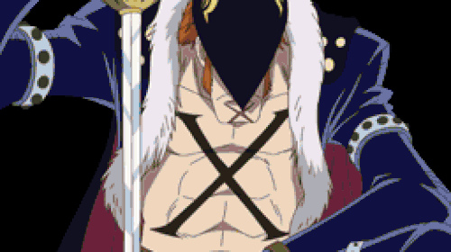

Kaidou


Kaidou of the Beasts, renowned as the world's "Strongest Creature", is the Governor-General of the Beasts Pirates and was formerly one of the Four Emperors that ruled over the New World. He is also the father of Yamato.
Once a promising child soldier at the service of the Vodka Kingdom decades ago, Kaidou was drafted against his will by the Marines but managed to escape and start a career in piracy. He was invited by Edward Newgate to join the legendary Rocks Pirates as an apprentice, where he met and befriended Charlotte Linlin. During the God Valley Incident when the Rocks Pirates met their downfall, Linlin provided Kaidou with the rare Mythical Zoan-type Devil Fruit, the Uo Uo no Mi, Model: Seiryu. He then went on to form his own crew and build it up into a powerful military force determined to challenge the World Government.
After being invited to Wano Country by Kurozumi Higurashi, Kaidou joined forces with Wano Country's shogun, Kurozumi Orochi, and occupied Onigashima as his base. After a failed attempt by Kouzuki Oden and the Nine Red Scabbards to overthrow him, he continued to accrue military might in Wano for 20 years before deciding to dispose of Orochi and proceed with his plan for the New Onigashima Project. Forming a Pirate Alliance with Big Mom, Kaidou intended to seize the Ancient Weapons and claim the One Piece. The plan never came to fruition, however, as Onigashima was raided by the Ninja-Pirate-Mink-Samurai Alliance on that very same night and the Beasts Pirates were ultimately defeated. Following Kaidou's defeat at Monkey D. Luffy's hands, the World Economy News Paper released a new listing of the Four Emperors, with Kaidou no longer being included among them anymore. After his defeat, Kaidou is now referred to in Wano's folklore retelling as "Dragon King Kaidou" (龍王カイドウ, Ryūō Kaidō?)
Kaidou was first referred to by Monkey D. Garp in the Post-Enies Lobby Arc when he revealed the existence of the Four Emperors, and was then first directly mentioned by Gecko Moria in the Thriller Bark Arc, with his status as one of the Four Emperors revealed after the Straw Hat Pirates defeated Moria. Thus, Kaidou is the third Emperor mentioned by name and the last to debut. Before he debuted in person, his voice was heard in a flashback that Kouzuki Momonosuke had when first disembarking on Dressrosa.
Due to his actions, he can be considered the overarching antagonist of the Dressrosa Saga, the main antagonist of the Wano Country Arc and Saga, and a major antagonist of the second half of the series.
- Role: Governor-General
- Bounty: 4,611,100,000 Beli
- Haki: Advanced Conqueror's Haki, Advanced Armament Haki, Advanced Observation Haki
- Technique: Thunder Bagua
- Power: Mythical Zoan: Fish-Fish Fruit Model: Azure Dragon
- Dream: To start the greatest war the world has ever seen
King

King the Conflagration is one of the three All-Stars of the Beasts Pirates and Kaidou's right-hand man. Born as Arber, he is a member of the near-extinct lunarian race from the Red Line, noted for their ability to create fire.
Due to his actions and role, he is a major antagonist in the Wano Country Arc.
- Role: All-Star
- Bounty: 1,390,000,000 Beli
- Haki: Armament Haki, Observation Haki
- Technique: Fire Manipulation
- Power: Ancient Zoan: Dragon-Dragon Fruit Model: Pteranodon
- Dream: To see Kaido become the Pirate King
Queen
Queen the Plague is an All-Star of the Beasts Pirates as one of Kaidou's three closest confidants. He formerly served as the de-facto ruler of Udon, a region in Wano Country. Born as Scien, he previously was also part of MADS.
Due to his actions and role, he is a major antagonist in the Wano Country Arc.
- Role: All-Star
- Bounty: 1,320,000,000 Beli
- Haki: Armament Haki
- Technique: Plague Rounds
- Power: Ancient Zoan: Dragon-Dragon Fruit Model: Brachiosaurus
- Dream: To create the ultimate biological weapon
Jack

Jack the Drought is a giant grouper fish-man, an All-Star of the Beasts Pirates as one of Kaidou's three closest confidants, and the captain of the Mammoth. He was formerly considered to be the ruler of Kuri in Wano Country.
He was first briefly mentioned when being notified of Caesar Clown's capture by viewers of Caesar's broadcast of the Punk Hazard incident. Due to his actions and role, he is the main antagonist of the Zou Arc, and a major antagonist in the Wano Country Arc.
- Role: All-Star
- Bounty: 1,000,000,000 Beli
- Haki: Armament Haki
- Technique: Trunk Crusher
- Power: Ancient Zoan: Elephant-Elephant Fruit Model: Mammoth
- Dream: To prove his worth to Kaido
Who's-Who
Who's-Who, also known as Who of the Droplets, is one of the Tobiroppo, the strongest six Shinuchi of the Beasts Pirates.
Over a decade ago, he served as an agent of CP9 before his failure to guard the Gomu Gomu no Mi led to his dismissal from service and imprisonment. Upon escaping, Who's-Who turned to piracy, becoming captain of the Who's-Who Pirates before eventually joining the Beasts Pirates.
Due to his actions and role, Who's-Who is a supporting antagonist in the Wano Country Arc.
- Role: Tobiroppo
- Bounty: 546,000,000 Beli
- Haki: Armament Haki, Observation Haki
- Technique: Fang Pistol
- Power: Ancient Zoan: Cat-Cat Fruit Model: Saber-Toothed Tiger
- Dream: To become an All-Star
Sasaki

"Overflowing" Sasaki is a bluespine unicornfish fish-man and one of the Tobiroppo, the strongest six Shinuchi of the Beasts Pirates. He also leads the crew's Armored Division. Before joining the Beasts Pirates, he captained his own crew called the Sasaki Pirates.
Due to his actions and role, he is a supporting antagonist in the Wano Country Arc.
- Role: Tobiroppo
- Bounty: 472,000,000 Beli
- Haki: Armament Haki
- Technique: Triceratops Charge
- Power: Ancient Zoan: Dragon-Dragon Fruit Model: Triceratops
- Dream: To defeat the strongest enemies
Black Maria
Black Maria is one of the Tobiroppo, the strongest six Shinuchi of the Beasts Pirates. She owns her own brothel on Onigashima near Kaidou's castle.
Due to her actions and role, she is a supporting antagonist in the Wano Country Arc.
- Role: Tobiroppo
- Bounty: 480,000,000 Beli
- Technique: Spider's Web
- Power: Ancient Zoan: Spider-Spider Fruit Model: Rosamygale Grauvogeli
- Dream: To manipulate others to her will
Ulti
Ulti is one of the Tobiroppo, the six strongest Shinuchi of the Beasts Pirates. She is the elder sister of fellow Tobiroppo Page One.
Due to her actions and role, she is a supporting antagonist in the Wano Country Arc.
- Role: Tobiroppo
- Bounty: 400,000,000 Beli
- Technique: Headbutt
- Power: Ancient Zoan: Dragon-Dragon Fruit Model: Pachycephalosaurus
- Dream: To protect her brother at all costs
Page One
Page One is one of the Tobiroppo, the strongest Shinuchi of the Beasts Pirates. He is the younger brother of fellow Tobiroppo Ulti.
Due to his actions and role, he is a supporting antagonist in the Wano Country Arc.
- Role: Tobiroppo
- Bounty: 290,000,000 Beli
- Technique: Spinosaurus Roar
- Power: Ancient Zoan: Dragon-Dragon Fruit Model: Spinosaurus
- Dream: To surpass his sister in strength
X Drake

"Red Flag" X Drake (pronounced as "Diez Drake") is the captain of the Marine Secret Special Unit SWORD. In order to go undercover as a pirate, he publicly defected from his position as rear admiral and founded the Drake Pirates. He is one of twelve pirates referred to as the "Worst Generation", and before the two-year timeskip had a bounty of Beli222,000,000.
Drake is the son of the Marine-turned-pirate Diez Barrels, and was affiliated with the Barrels Pirates until he defected to the Marines. As a young adult, he was called Dory.
In Drake's endeavor as an undercover spy, he and his crew became subordinate to the Beasts Pirates, led by Kaidou of the Four Emperors, over the two-year timeskip. Drake served as one of the crew's Shinuchi, specifically one of strongest six called Tobiroppo. His treachery was eventually uncovered, however, leading him to ally himself with the Ninja-Pirate-Mink-Samurai Alliance.
- Role: Tobiroppo (undercover)
- Bounty: 222,000,000 Beli
- Haki: Armament Haki, Observation Haki
- Technique: X Calibur
- Power: Ancient Zoan: Dragon-Dragon Fruit Model: Allosaurus
- Dream: To take down Kaido from within